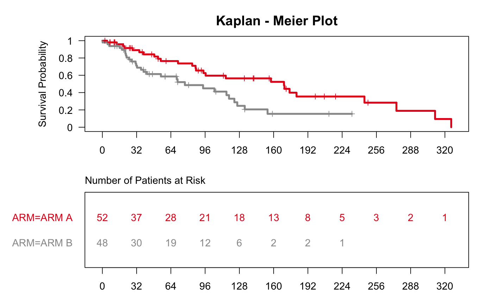
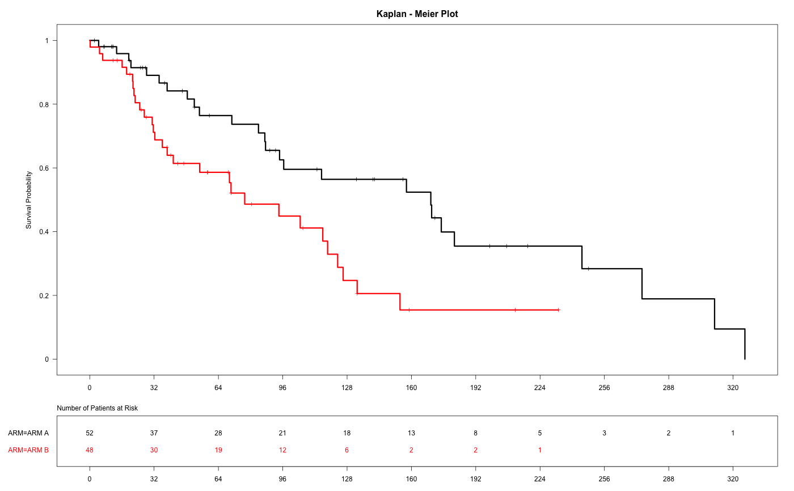

Create a KM plot for any survfit object.
g_km(fit_km, col = NULL, xticks = NULL, title = "Kaplan - Meier Plot", draw = TRUE, newpage = TRUE)
| fit_km | a class |
|---|---|
| col | a vector of color for each line |
| xticks | break interval of x-axis. It takes a numeric vector or
|
| title | plot title |
| draw | boolean, should plot be drawn |
| newpage | boolean if |
library(random.cdisc.data) ASL <- radam("ASL") ASL$RACE <- factor(sapply(as.character(ASL$RACE), function(x) { if (nchar(x)>9) paste0(substr(x, 1,9), "...") else x })) ATE <- radam("ATE", ADSL = ASL) ATE_f <- subset(ATE, PARAMCD == "OS") ANL <- merge(ASL, ATE_f, by = c("USUBJID", "STUDYID")) fit_km <- survfit(Surv(AVAL, 1-CNSR) ~ ARM, data = ANL, conf.type = "plain") g_km(fit_km = fit_km)g_km(fit_km = fit_km, col = c("black", "red"))